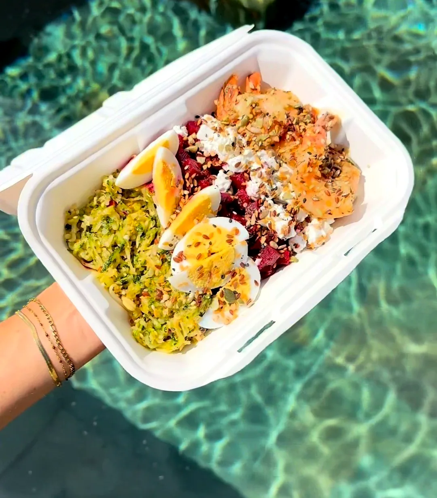
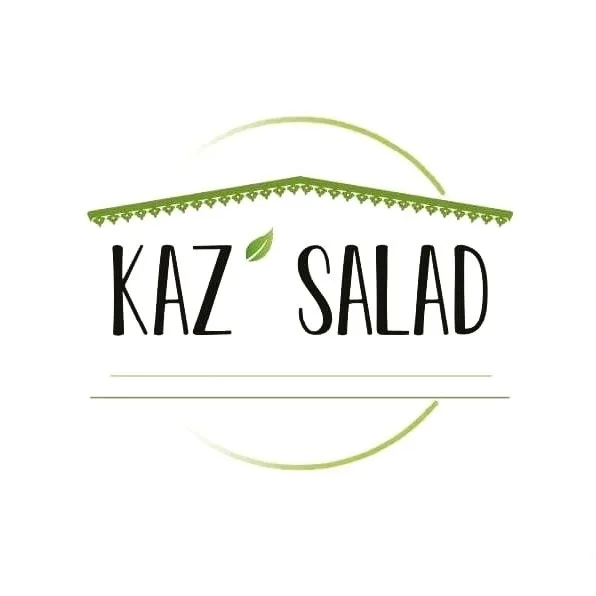
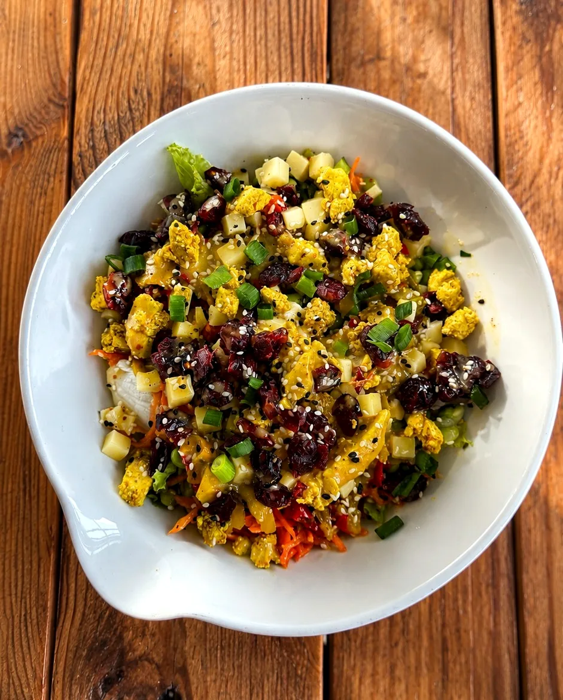
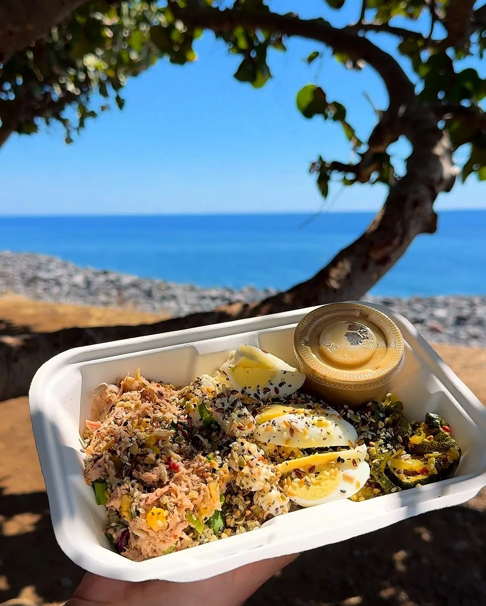
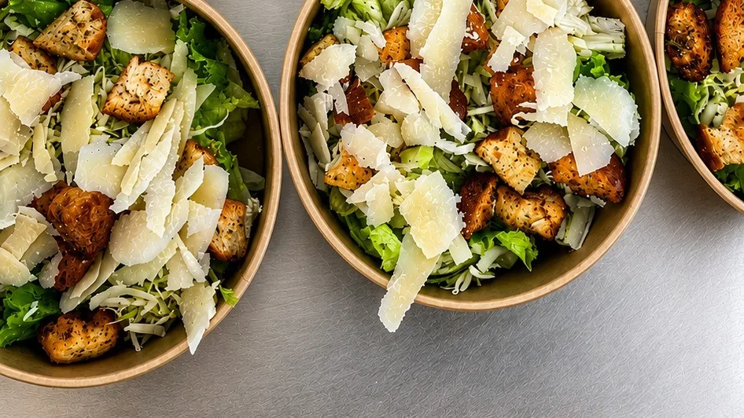
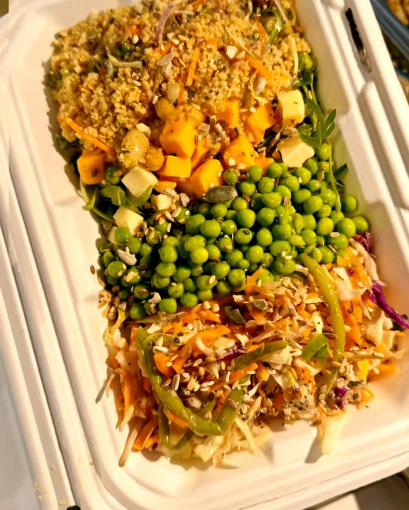
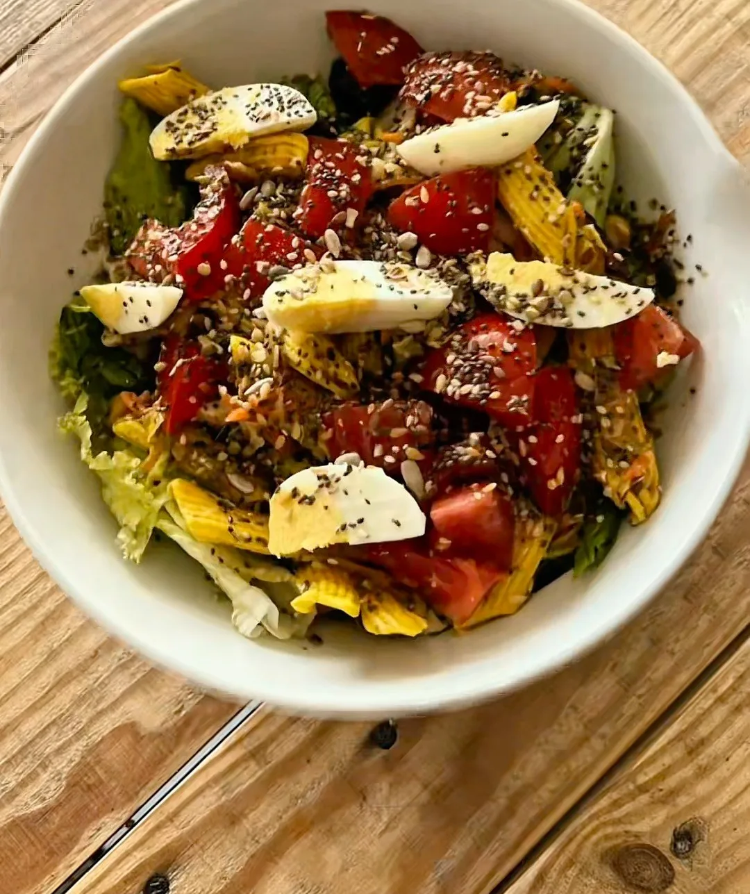
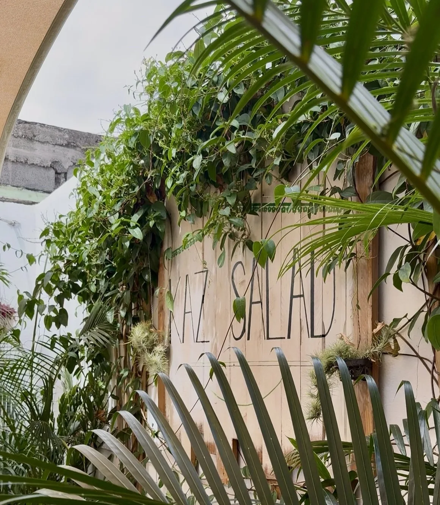

Bar à salades · La Possession & Le PortBases majoritairement bio, 27 ingrédients cuisinés chaque matin, vinaigrettes maison. Sur place, à emporter ou livrée.
Une dizaine de bases majoritairement bio, 27 ingrédients cuisinés chaque matin, des vinaigrettes maison et des produits frais choisis au maximum en circuits courts. Végétarien, gourmand, léger ou simplement indécis : chacun repart avec la salade qui lui ressemble.

Pâtes, laitue, quinoa, riz, blé, semoule…
Cuisinés le matin même, pour toute la fraîcheur du midi.
Nos vinaigrettes maison, de la plus douce à la plus parfumée.
La petite touche finale qui fait toute la différence.
Falafels croustillants, taboulé parfumé, aubergines et poivrons grillés, tomates confites, sauce yaourt onctueuse et pain pita.
Poulet tendre, œuf mollet bien coulant, croûtons à l'ail, copeaux de parmesan, tomates confites et notre sauce César.





Au bord de la mer, au bureau, à la maison ou sur notre terrasse au vert du Port : c'est toi qui décides. Le temps de souffler, de te faire plaisir et de recharger les batteries.
« Chaque salade est composée avec amour. »
8 rue Mahatma Gandhi
11h30 – 14h30
Livraison Uber Eats 11h – 14h
27 rue Léon de Lepervanche
11h00 – 14h00
Terrasse au vert